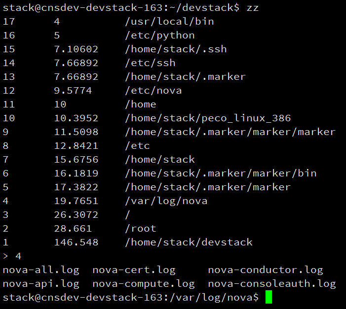
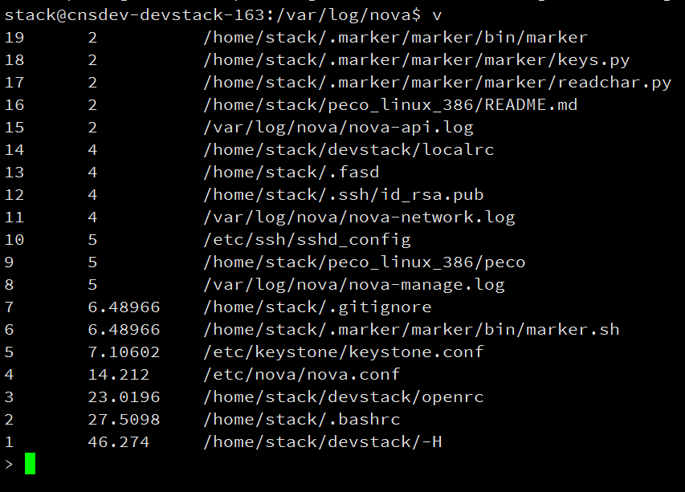
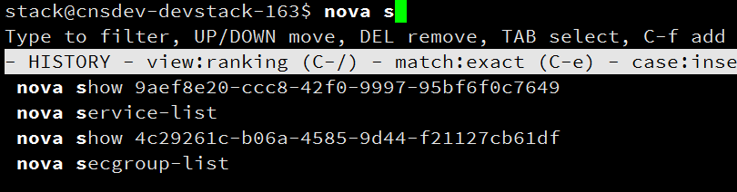
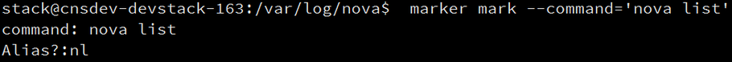
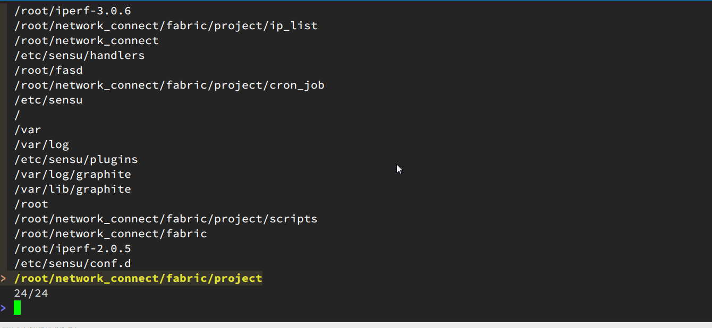
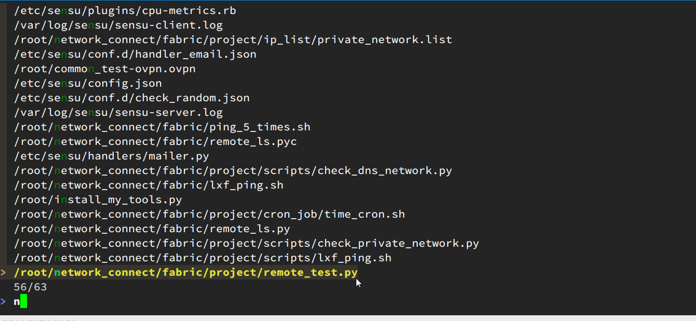
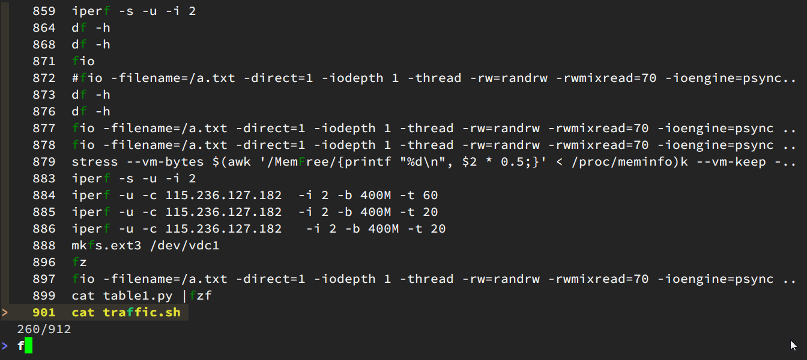

命令行下高效操作
Contents

在计算机体系结构领域里，缓存是唯一称得上伟大的思想，其他的一切发明和技术不过是在不同场景下应用这一思想而已。 — Bill Joy
我在日常学习过程中，发现在ssh到云主机上进行操作的过程中，最多的操作就是在切换目录，查看一些配置文件，以及运行某一些命令。
在这个过程中我发现了一些低效率的操作，比如cd到各个不同的目录，然后在vi查看文件。因此，我在考察了一些工具之后（unix自带的pushd+popd，以及第三方autojump，z等），发现fasd工具还是挺好用的。
fasd
Fasd主要是利用了一种frecency算法来排列你访问的文件和目录，即frequency和recency。一图胜前言，以下是我在~/devstack目录下输入快捷键zz

它按照我访问的频次和时间顺序进行加权，给出一个排列，我在输入4，即切换到nova的log目录下。
我在输入命令v，给出为访问文件的频次，输入之前的序号即打开vim进行编辑。
以上是针对目录和文件的操作。日常操作另一大块是命令的执行。

我们每天都在不停的按 ctrl+r 来对history中命令进行复用。或者在bashrc里面设置alias简化复杂命令。前者不够直观，后者比较麻烦。
因此推荐 hstr 和 marker 两个工具。
hstr
利用hstr，可以在命令行下输入hh <命令前缀> ，它会打开一个过滤器，可以交互选择。比如 hh nova，所有历史命令nova 开头的即被过滤出来，可以用方向键上下选择，或者继续输入过滤。
我们通过如下方式在 ubuntu上安装它：
|
|

maker
Marker可以视为命令行的snippet工具。它有如下特点：
1.模糊匹配
2.Aliases自定义
3.命令行模板
4.支持众多的shell， 例如 Bash Zshell.
上述命令常用的，可在命令行下使用ctrl+k 加入你的管理中，并设置alias。下次在使用时，利用ctrl+@展开复用。
安装方法：
|
|

fzf
后来又过了一段时间，我和云主机打交道的次数也越来越多，偷懒的天性让我进一步思考，有没有改进的空间？毕竟，Larry Wall大神曾经说过：
好的程序员有3种美德： 懒惰、急躁和傲慢（Laziness, Impatience and hubris）。
以及apple的高级工程师 Bret Victor 曾经在一个视频中提到的原则，创造者需要对自己的创造的东西有实时的反馈。
结合以上的两个思想，我巧遇到了fzf，并把它和fasd结合起来。以下是几个demo：
- 在第一个demo中，我经常访问的目录列表已被fasd记录，我每次切换目录的时候，并不需要通过cd以及无穷无尽的tab来补全了。直接用z来触发目录列表，然后直接输目录名字，跳转完成！

- 这是存储经常编辑文件列表，直接用v触发，然后通过fzf模糊搜索过滤，回车即用vim打开编辑。

- 这是历史命令， 再也不需要不停的按
ctrl+r一个一个找了，输入关键词，就可以用方向键上下选择。而且因为支持模糊搜索，命令记不清也没关系，只要出现在历史记录中，都能找到。（记得把历史记录HISTSIZE改的大一点哦）。

以上我抛砖引玉，分享一些自己的小心得，他们的确大大提高了我的工作效率，希望对大家有帮助。
以上提及工具地址
|
|
Author smasterfree
LastMod 2016-05-18